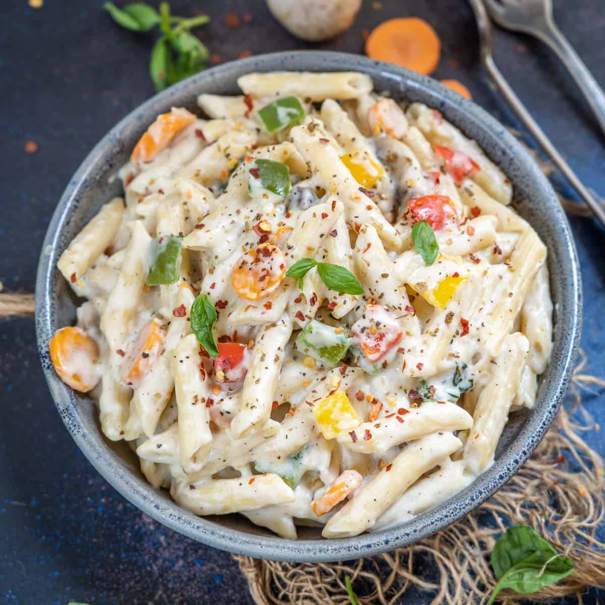

"No restaurant can match this feeling."
Ingredients
Steps & Emotions
- Boil pasta - preparation
- Melt butter in another container- comfort starts
- Add flour to butter - thickening emotions
- Stir - patience builds
- Add milk - smooth flow
- Saute vegetables of your choice on another pan - flavors develop
- Add cheese to the batter - richness grows
- Mix well with boiled pasta and add vegies - everything blends
- Cook slowly - patience
- Serve - warmth spreads
- Taste - love felt
Time: 25 mins | Difficulty: Medium